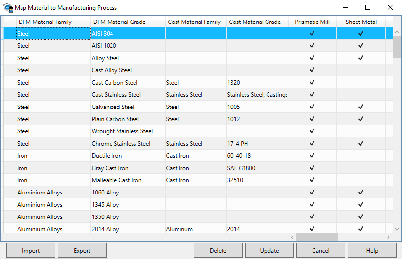
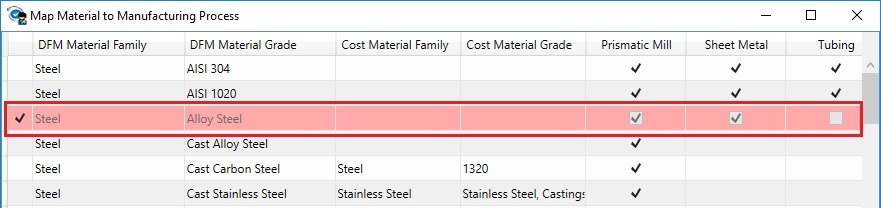

ルールマネージャーダイアログボックス内の  Map Material ボタンをクリックすると、材料と製造プロセスのマッピング ダイアログボックスが表示されます。このダイアログボックスには、材料およびグレードに関連するプロセスの一覧が表示されます。このダイアログボックスから、DFMPro は必要に応じてデータベースを更新することができます。
Map Material ボタンをクリックすると、材料と製造プロセスのマッピング ダイアログボックスが表示されます。このダイアログボックスには、材料およびグレードに関連するプロセスの一覧が表示されます。このダイアログボックスから、DFMPro は必要に応じてデータベースを更新することができます。
書き込み権限を持つユーザーは、必要に応じて列の追加／削除／編集を行うことができます。Update ボタンをクリックすると、変更内容がデータベースに保存されます。組織固有の材料リストを一括で追加するには、Export ボタンをクリックして材料リストをエクスポートします。この操作により、既存のすべての材料および選択されたプロセスの一覧が表示され、新しい材料を追加し、それらを製造プロセスにマッピングするのに役立ちます。
エクスポート後、Import ボタンを使用して同じリストをインポートします。更新されたすべての材料は DFMPro データベースに追加されます。
列上にマウスカーソルを合わせるとチェックボックスが表示されます。材料およびグレードに対して、必要なプロセスを選択します（またはその逆も可能です）。材料およびグレードの同じ選択内容は、選択されたプロセスに対して DFMPro インターフェースにも反映されます。

ダイアログボックス内で最下部までスクロールし、最後の行にマウスカーソルを合わせて選択します。
DFM Material Family および DFM Grade Family フィールドに、材料名およびグレード名を入力します。
Cost Material Family および Cost Grade Family フィールドでは、ドロップダウンリストから材料名およびグレード名を選択します。
注：
DFM または Cost のいずれかに材料が入力されている場合、グレードの定義は必須です。定義されていない場合、Update ボタンをクリックした際に無効なエントリーとして表示されます。
材料およびグレードを選択した後、一覧から該当するプロセスのチェックボックスを選択します。
選択後、Update ボタンをクリックして、変更内容をデータベースに保存します。
注：
Cost ライセンスが利用できない場合、Cost Material Family および Cost Grade Family の列はダイアログボックスに表示されません。
Cost ライセンスが利用可能な場合、これらの列が表示されます。DFMPro では、材料およびグレードを定義し、その変更をデータベースに保存することができます。
一覧から対象の行にマウスカーソルを合わせて選択します。
必要なプロセスについて、チェックを入れるまたは外す操作を行います。
Update ボタンをクリックして、変更内容をデータベースに保存します。
材料名の前にあるチェックボックスを選択します。
Delete ボタンをクリックします。該当行が赤色に変わります。
Update ボタンをクリックして、データベース一覧から行を削除します。

注：
追加、削除、または編集後にデータベースへ保存されたすべての変更内容は、DFMPro セッションを再起動した際に反映されます。